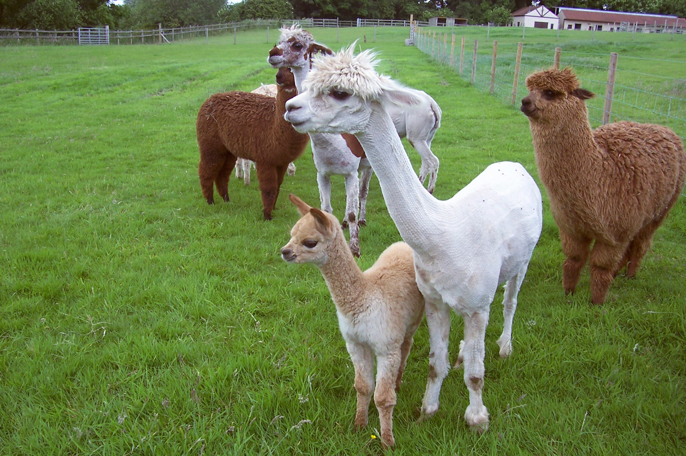

Alpacas come in two main types - huacaya and suri. The huacaya is the most common type in this country and has shorter dense fleece, whilst the suri looks more like an Afghan hound with dreadlocks.

Alpacas originate from the Andes region of South America mainly Peru and Chile where they have been farmed since the time of the Incas for their highly valued fleece. They are members of the Camelid family which includes, Llama, Vicuna and Guanaco who can also be found in South America.
They are hardy but gentle animals, very curious but easy to maintain who should be kept in a herd of not less than two animals.
They have a life span of up to 20 years. An average adult weighs approximately 75kg. A baby alpaca or cria can weigh approximately 7.5 to 10 kg at birth.
The breeding cycle is normally from 3-15 years and the gestation period is approximately 11 months which results in single birth.